Learning outcomes
| Outcome | Evidence |
|---|---|
| Analyse architectures | Hybrid design over pure planning or reacting; shared file over KQML |
| Apply under uncertainty | Literature agent with quote checks and a human decision |
| Tools and ethics | Python agent, tests, privacy settings, three case studies |
| Team work | Team report, Group B forum, three discussions |
Case studies
Case study 1: AI safety constraints
What
My project has 2 agents. The first splits a research question into subgoals, then searches PubMed for each one. Gemini decides when a subgoal is done, but inside limits set in the code: 4 searches and 15 steps each. A unit test shows that a 5th search never reaches PubMed. And no paper counts as evidence until a person approves it.
So what
Gemini could ignore a limit in the prompt. It cannot ignore one in the code. The Unit 10 seminar described the same split: a language model “might generate a recommendation”, while “another component determines whether it should be executed” (Anupam, 2026).
My tests also showed how the agents fail. When Gemini hit its free limits mid-run, each subgoal was marked failed, and the file was still saved. That is failing safely. But when the error came in the step that creates the subgoals, the whole run stopped and nothing was saved, 3 times. Wooldridge (2002) warns that an agent only partly controls its environment, so any action can fail. So limits are not enough. An agent also needs a plan for when a step fails.
Now what
I would add a retry after a short wait to that step. In every agent I build, I want 2 things decided before the code: the limits, and what the agent does when it fails.
Case study 2: Explainable decisions (XAI)
What
My 2 agents explain themselves in 2 ways: reasons and quotes. The first logs every search with Gemini’s reason for it. The second gives every paper it picks a reason and an exact quote from the abstract. The code checks each quote word for word. In 2 runs, all 10 quotes were exact. In another, only 5 of 7 were.
So what
These 2 explanations are not the same. The quote can be checked. Gemini’s reasons cannot: they are more text from the same model. In Discussion 3, I asked a peer how he knew his model’s reasons were right. The 2 failed quotes show what a model can do with text nobody checks.
But the check alone was not enough. The code counted the 2 failed quotes, but the review page did not show which ones. So the reviewer saw all 7 papers the same way. The Unit 10 seminar said explanations “should support challenge and appeal, not just describe a model” (Anupam, 2026). Mine could not, because the reviewer never saw the problem. Without a flag, the human review risks becoming “merely a rubber stamp” (Anupam, 2026).
Now what
Next time, the review page will mark each quote as checked or failed, and show that the reasons are not checked. Then the reviewer knows what to question.
Case study 3: Bias in autonomous decision-making
What
Bias was unfortunately part of my project from the start. The first agent searches PubMed only, in English. The report planned a second source, Semantic Scholar. I got a key, but I was too far into the build to add it. PubMed also sorts by most recent by default, and my first results were mostly off-topic. I switched to relevance. Even then, on a question about exercise and depression in older adults, the first paper was a trial on knee arthritis. Gemini left it out.
So what
PubMed’s relevance is about the search words, not the question. So every choice before the model decides what the agents can see: the source, the language, the order. Gemini’s ranking then adds a second filter that nobody checked. My quote check even adds to it: a paper with no English abstract can never pass. And it only checks what was picked, not what was missed. The Unit 10 seminar warned that “optimising overall accuracy can conceal unequal outcomes” (Anupam, 2026).
Now what
I set a recall target and never measured it. Next time, I will check a sample by hand to see what the agents miss, and add a second source. An agent that searches the web finds what is written about most. No result does not mean nothing exists.
Units
This is far from all I learned. Here is the one idea I would keep from each of these units.
Unit 1: Intelligent agents
An agent decides its own next step without being told. I used to hear “agent” for almost any AI tool. Prompting a model and fixing its answers by hand is not an agent: a person is needed at every turn.
Unit 2: First-order logic
The seminar gave me a rule I keep: use logic where the rules are solid, and a model where they are not. Rules are cheaper and easier to explain.
Unit 3: Agent architectures
Each bird in a flock follows 3 simple rules, and nothing codes the flock itself (Reynolds, 1987). Several agents together can do things nobody coded, so testing each agent alone is not enough.
Unit 4: Hybrid architectures
My project is built on it. Hybrid is not just planning plus reacting: the hard part is who decides, and when. In my first agent, Gemini plans and searches; the code sets the limits.
Unit 5: Agent communication
A message type needs a precise meaning, or the act it stands for never happens (Searle, 1969). KQML cannot even promise a future action. One more reason my 2 agents share one checked file.
Unit 6: KQML dialogue, intent apart from content
ask-one = I ask a question and I want one answer
tell = I give an answer
:sender = who sends the message
:receiver = who receives the message
:language = the language of the content (here KIF)
:ontology = the shared vocabulary both agents use
:reply-with = a name for my question (like an identifier)
:in-reply-to = the identifier of the question I am answering
:content = the question or the answer itself
1. Alice asks how many 50 inch TVs are in stock
(
ask-one
:sender Alice
:receiver Bob
:language KIF
:ontology WAREHOUSE
:reply-with q1
:content (STOCK TV-50 ?quantity)
)
2. Bob answers: 120
(
tell
:sender Bob
:receiver Alice
:language KIF
:ontology WAREHOUSE
:in-reply-to q1
:content (STOCK TV-50 120)
)
3. Alice asks how many HDMI slots the TV has
(
ask-one
:sender Alice
:receiver Bob
:language KIF
:ontology WAREHOUSE
:reply-with q2
:content (HDMI-SLOTS TV-50 ?slots)
)
4. Bob answers: 3
(
tell
:sender Bob
:receiver Alice
:language KIF
:ontology WAREHOUSE
:in-reply-to q2
:content (HDMI-SLOTS TV-50 3)
)Unit 8: Parse trees and an ambiguous sentence
Group of words
S = sentence
NP = noun phrase
VP = verb phrase
PP = prepositional phrase (like with ...)
Single words
D = determiner (like the, a ...)
N = noun
V = verb
P = preposition (like with)
1. The government raised interest rates.
S
NP
D The
N government
VP
V raised
NP
N interest
N rates
2. The internet gives everyone a voice.
S
NP
D The
N internet
VP
V gives
NP
N everyone
NP
D a
N voice
3. The man saw the dog with the telescope.
S
NP
D The
N man
VP
V saw
NP
D the
N dog
PP
P with
NP
D the
N telescopeUnit 10: Deep Learning in Action
IDx-DR checks the eyes of people with diabetes for diabetic retinopathy, without an eye doctor. Deep learning detectors look for the signs of disease, then give one of 2 answers: see an eye doctor, or come back in 12 months (Muoio, 2018). In its trial, it found 87.2% of the people who needed a referral (Abràmoff et al., 2018). The risk is in the “no”: about 1 in 8 people with the disease are told to wait a year. As in my own system, a human check only covers what the system shows.
Professional development
Skills Matrix
Rated from 1 to 5.
| Skill | Rating | Evidence |
|---|---|---|
| Time management: study and build | 3 | I kept up with Units 1 to 7, but started coding the project late and posted Discussion 3 late. |
| Commercial awareness: AI tool limits | 4 | I used free tools only. Their daily limit cost me days, so real use needs a paid plan. |
| Critical thinking & analysis: judging my design | 4 | I compared the plan with the build, and stated the limit of my quote check. |
| Communication & Literacy: forum discussion | 4 | I posted, replied to peers and summarised in all three discussions. |
| IT & Digital: building agents in Python | 4 | My first agents: Python, LangChain, Streamlit, SQLite, pytest and the PubMed API, over 50 commits. |
| Resilience: failed runs and limits | 4 | 5 runs hit the free limits. I changed the model and finished the run. |
| Interpersonal: giving and taking feedback | 3 | I pushed back on a long review, settled it the same day, and changed my draft. |
| Problem-solving: debugging | 4 | I found three API limits in one run and fixed 10 of 12 failing tests. |
| Ethical awareness: human decision and privacy | 3 | A person decides on every paper and the API key stays private, but more controls are needed. |
| Teamwork & leadership: proposing and delivering | 4 | I proposed the topic fully worked out, delivered my section on time, and handed over the architecture. |
| Critical reflection: learning from what failed | 4 | My tests file records each failure and fix; my reflective piece lists what to improve. |
Action plan
| Skill | Action | By when |
|---|---|---|
| Time management (3) | Start the code in the week the brief opens, not at the end. | Next module, first week of the brief |
| Interpersonal (3) | Read a long review in full and answer its content before its length. | Next team project |
| Ethical awareness (3) | Flag every output the code could not check, and retry after a short wait. | The next agent I build |
| Critical thinking (4) | Measure recall on a sample checked by hand before I call an agent finished. | The next agent I build |
Project
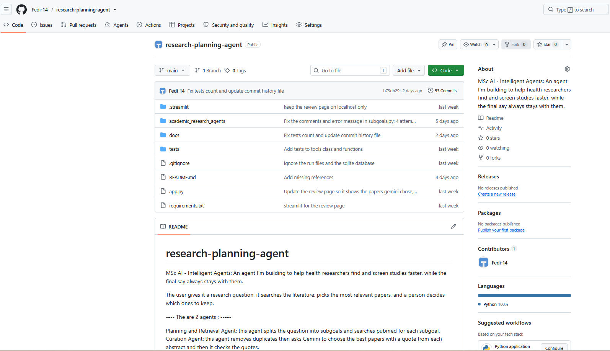
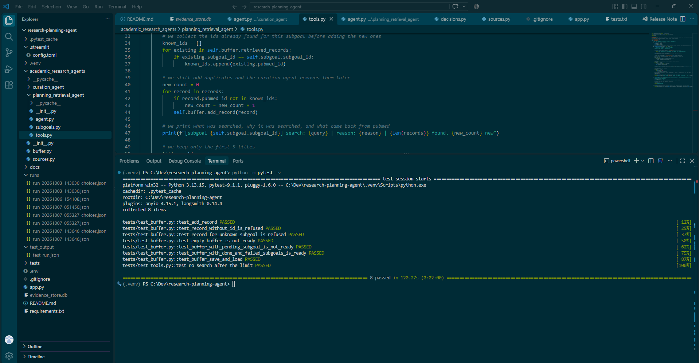
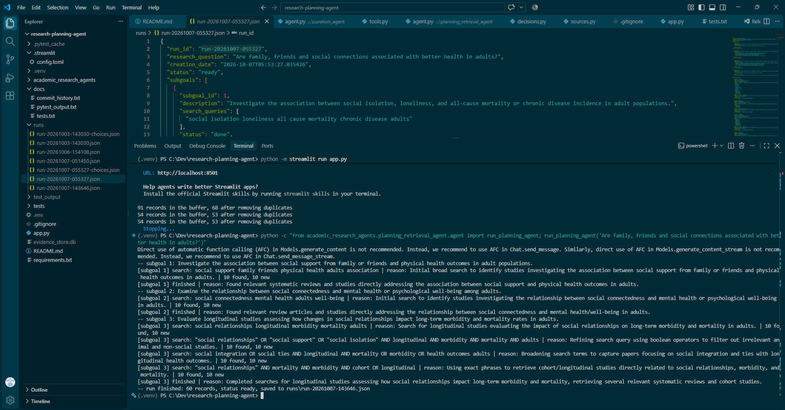
Team
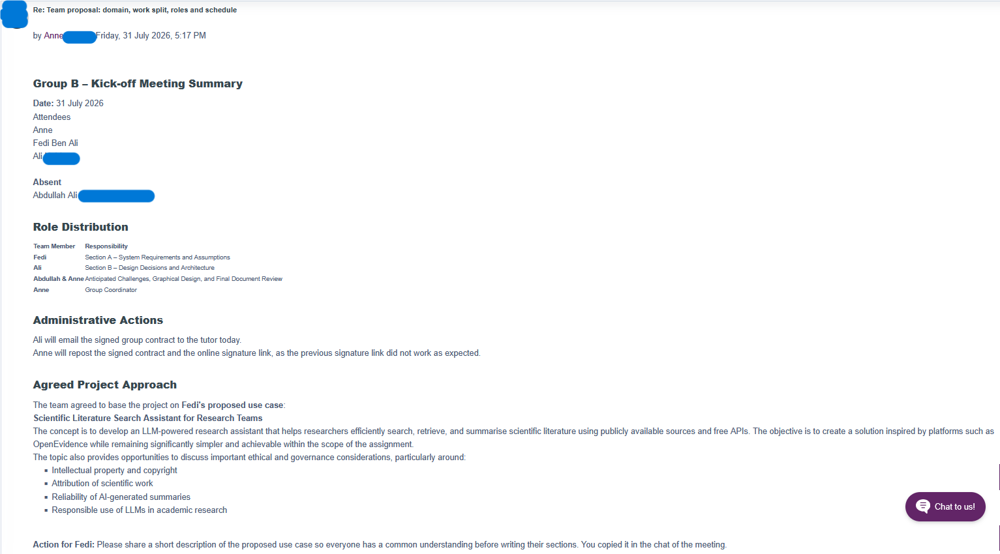
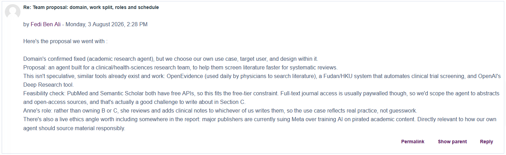
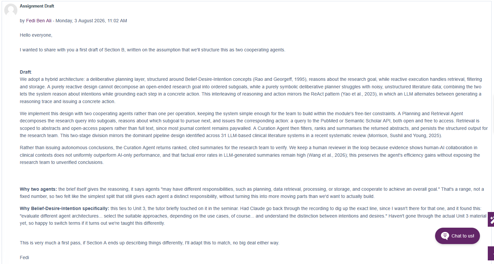
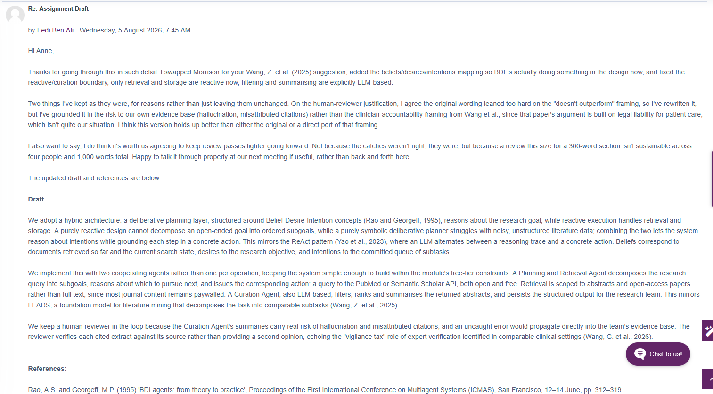
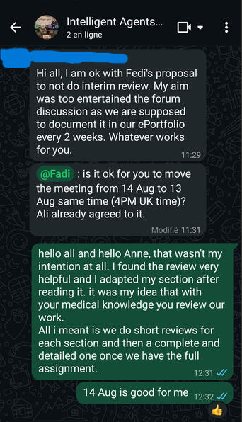
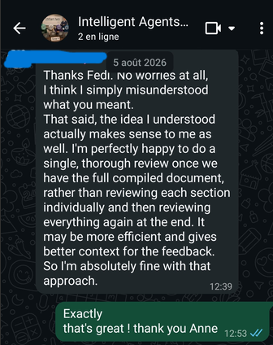
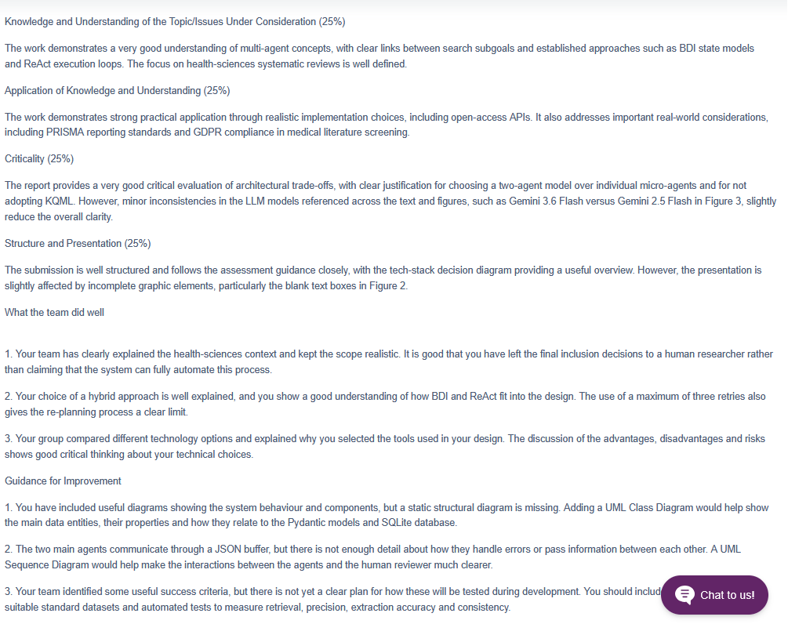
My lesson: be patient, and see a long review as help.
Discussions
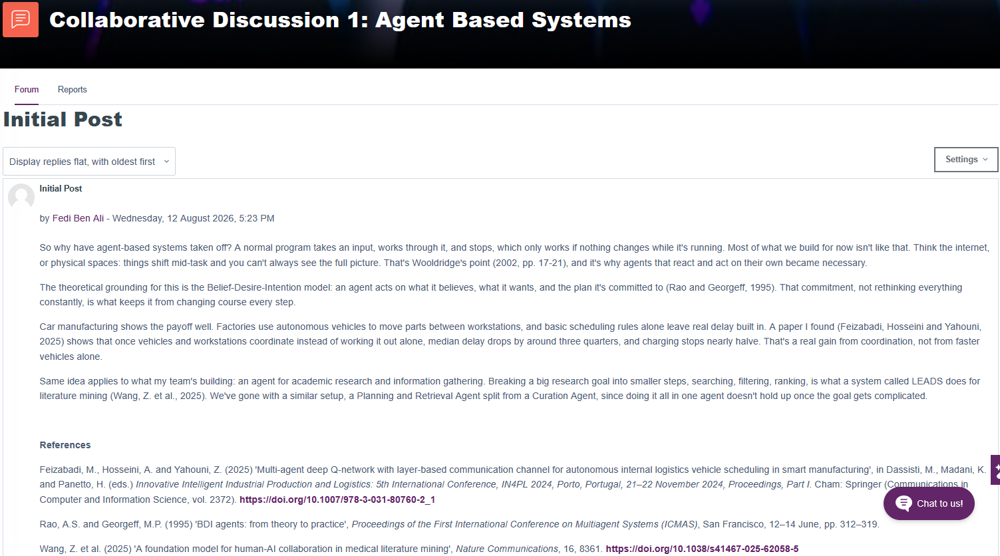
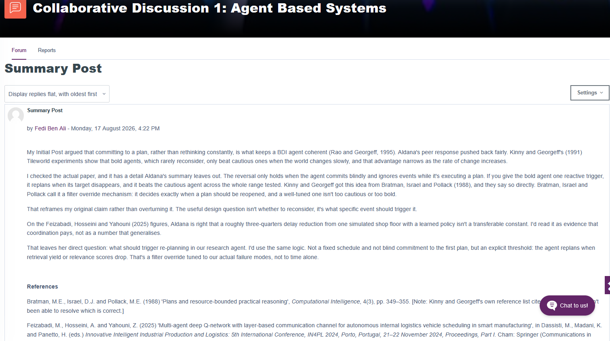
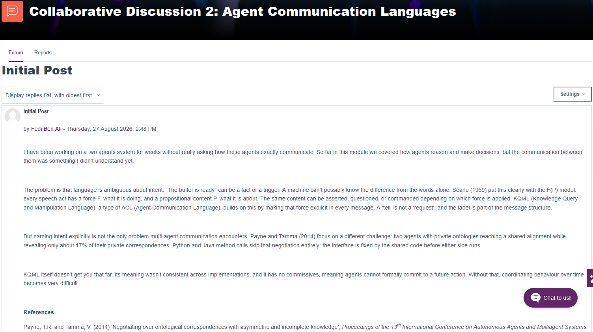
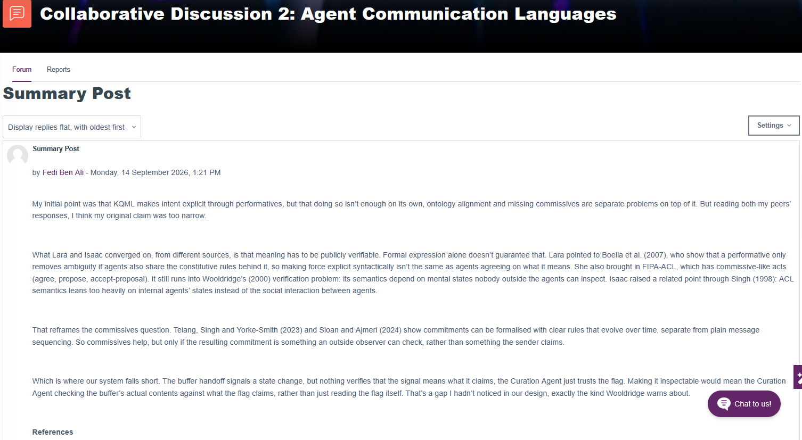
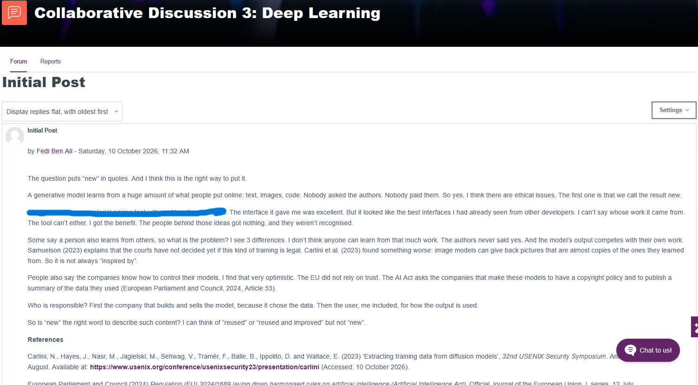
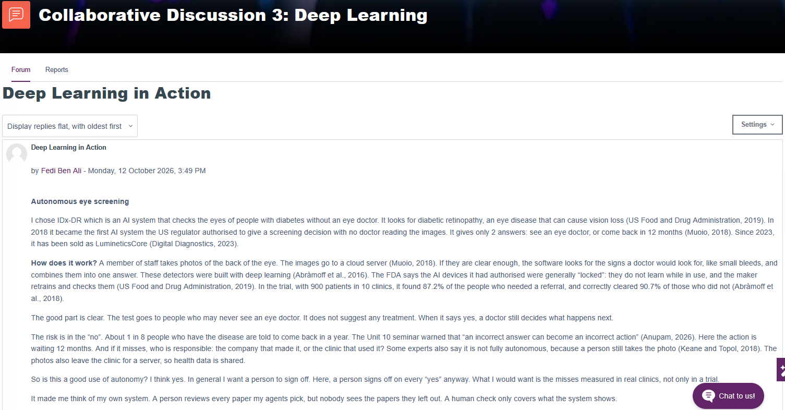
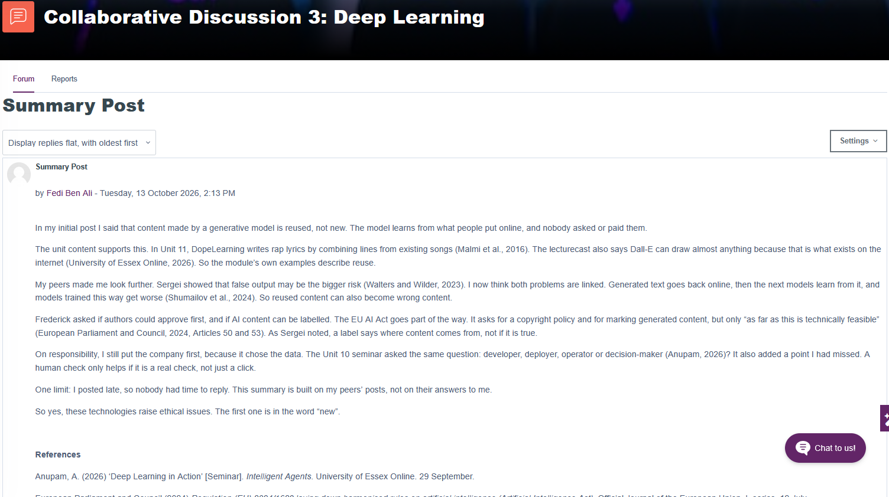
References
- Abràmoff, M.D., Lavin, P.T., Birch, M., Shah, N. and Folk, J.C. (2018) ‘Pivotal trial of an autonomous AI-based diagnostic system for detection of diabetic retinopathy in primary care offices’, npj Digital Medicine, 1, article 39.
- Anupam, A. (2026) ‘Deep Learning in Action’ [Seminar]. Intelligent Agents. University of Essex Online. 29 September.
- Muoio, D. (2018) ‘FDA permits marketing of AI software that autonomously detects diabetic retinopathy’, MobiHealthNews, 12 April. Available at: https://www.mobihealthnews.com/news/fda-permits-marketing-ai-software-autonomously-detects-diabetic-retinopathy (Accessed: 12 October 2026).
- Reynolds, C.W. (1987) ‘Flocks, herds and schools: a distributed behavioral model’, Computer Graphics, 21(4), pp. 25-34.
- Searle, J.R. (1969) Speech acts: an essay in the philosophy of language. Cambridge: Cambridge University Press.
- Wooldridge, M. (2002) An Introduction to MultiAgent Systems. Chichester: John Wiley & Sons.